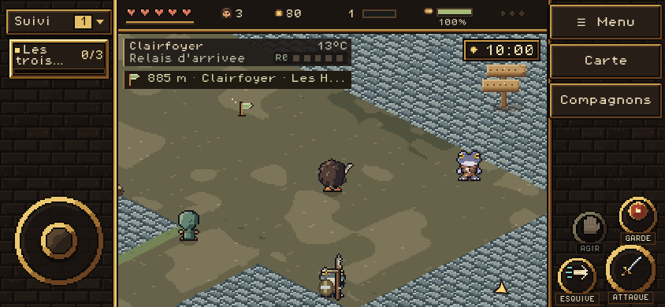
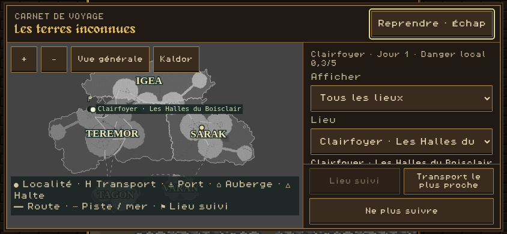
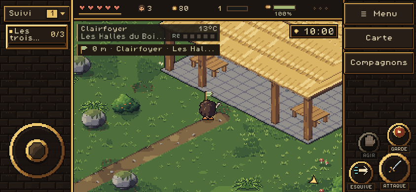

L’arrivée des transports est au relais, environ 885 m à l’est du centre. Dans Carte, sélectionner « Clairfoyer · Les Halles du Boisclair », puis « Suivre ce lieu ». Le fanion guide vers le quartier construit.
Captures du HTML livré dans le paquet iOS, en Chromium au format mobile 844 × 390, à 10 h, sans Worker. Le joueur a été placé aux deux accès pour vérifier le rendu ; aucun voyage ou nouveau dessin n’est simulé dans ces images. Rapport des contrôles.


